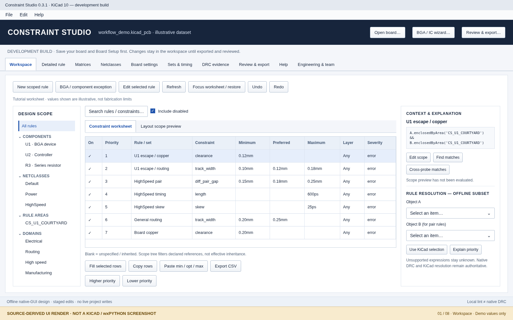
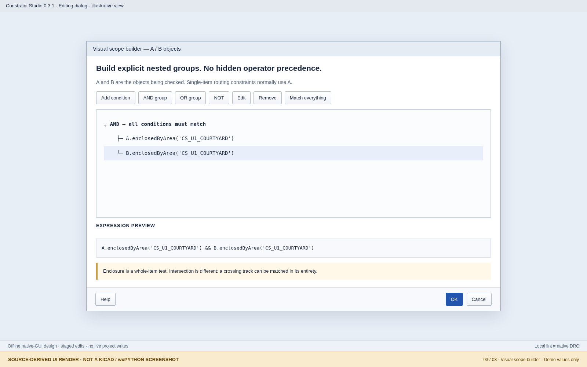
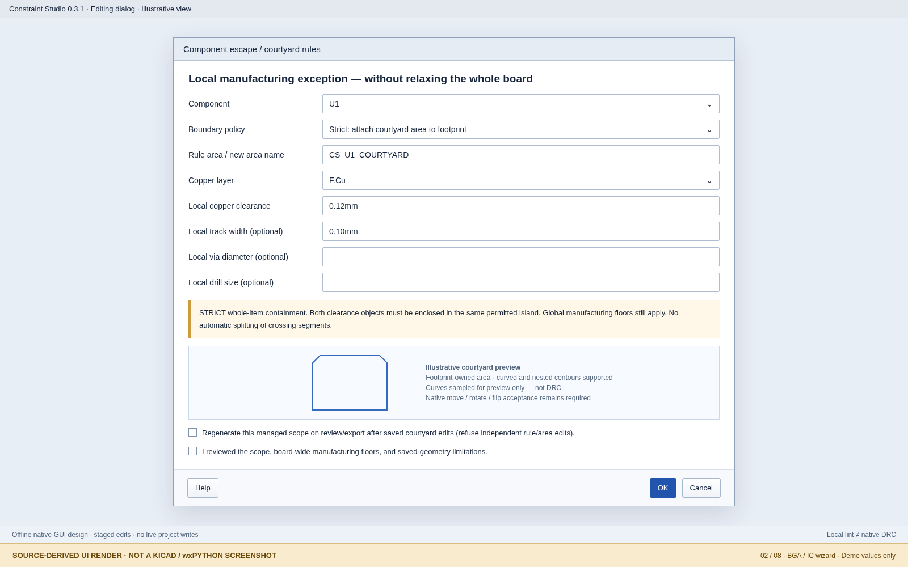
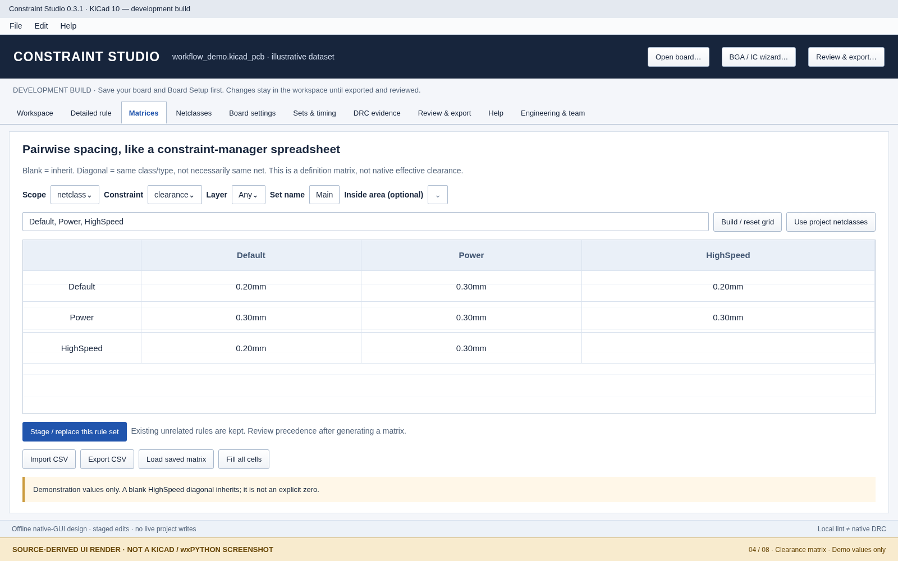
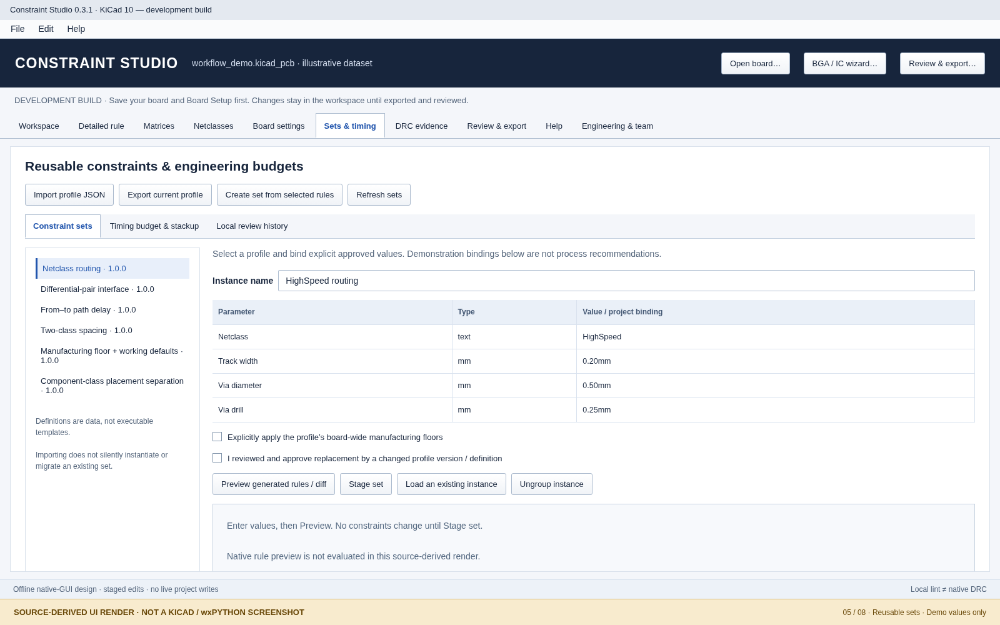
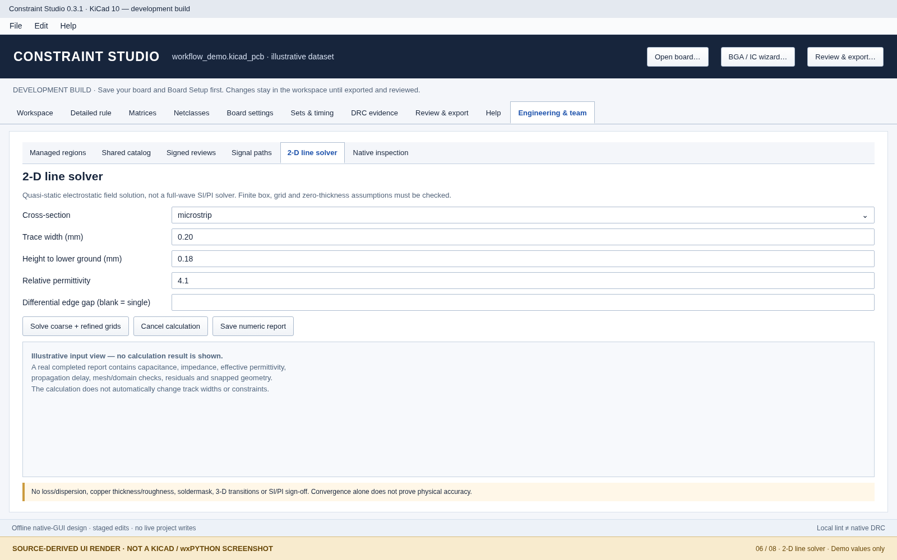
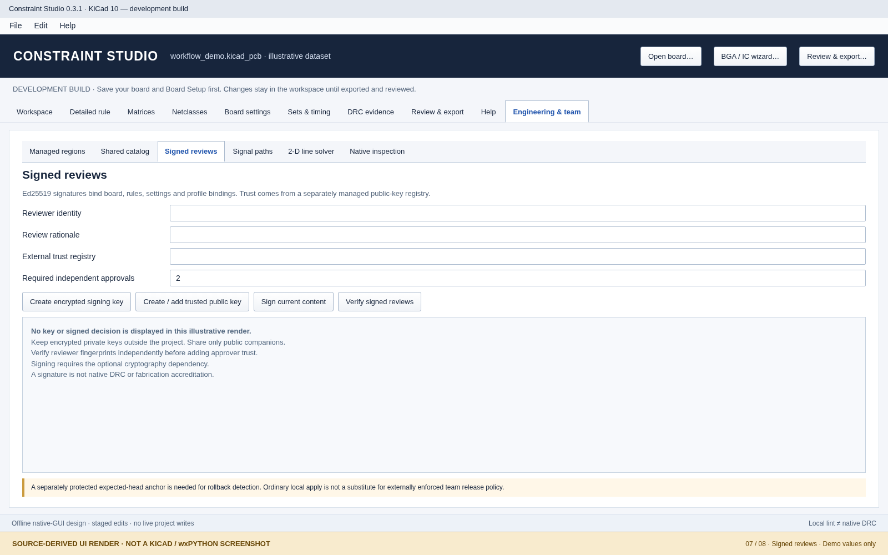
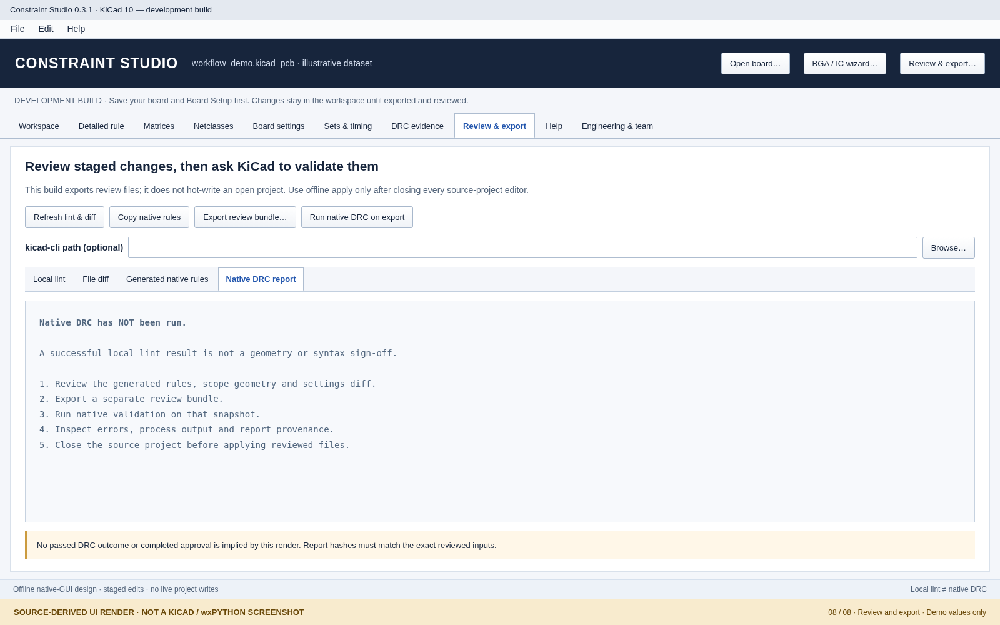

Use the Help tab for searchable, contextual documentation. This is the complete fallback text.
Install the PCM archive, open a saved project copy, stage one constraint, review and validate without overwriting the open PCB.
Constraint Studio is a native-window, offline-first editor for KiCad custom design rules and selected project constraints. Version 0.3.1 adds a complete help centre and illustrated documentation to the 0.3 feature set. The deliverable is a development build. It is not a native-accepted replacement for KiCad or an Xpedition-equivalent product.
Important. Demonstration values in this manual and gallery are not fabrication limits. Replace them with limits approved for your stackup, fabrication process and design. Local lint is not native DRC, and a successful export is not a passed design.
The PCM archive includes plugin code, offline help, images, examples and supporting documentation. The source archive additionally includes tests, authoring/build tools, the standalone launcher, and the apply/check command-line entry points. Help requires no web service, model account, API key or optional solver/signing package.
Know which snapshot an edit, rule explanation, DRC report or approval actually refers to.
| State | Meaning | What changes it |
|---|---|---|
| Saved source | Files on disk when the plugin loads the project. Fingerprints protect these inputs. | Saving in KiCad or another editor; reload explicitly after external edits. |
| Staged workspace | In-memory rules, project settings, copied regions and metadata. | Worksheet edits, wizards, profiles and team actions. |
| Exported review | A separate, self-contained review snapshot and manifest. | Export to a new empty directory; do not hand-edit an approved bundle. |
| Current open KiCad board | The live editor and its active rules/selection. It may differ from the workspace. | KiCad editing and native Board Setup. Native resolution inspects this state. |
| Validation evidence | A report linked to the inputs used for that run. | Run DRC on an exported review; later workspace edits do not update the report. |
Save source → load → stage → inspect → export → native validation → close source editors → apply reviewed copy → reopen. Reload is not a merge: preserve your staged work by exporting it before discarding or reloading. Undo/redo handles supported workspace actions in the current session; it cannot undo external file changes or a completed offline apply.
No live hot-write of custom rules into the open KiCad 10 editor; no background catalog synchronization; no inferred fabrication approval; no continuous observation of courtyard edits; no automatic repair of every DRC violation. Explicit checks and confirmations make these transitions visible.
Important. A scope preview marked unknown is unresolved, not a non-match or a pass. A native report belongs to its recorded snapshot, not whichever board happens to be open later.
Navigate declared scopes, edit typed rows and inspect possible matches without confusing the grid with native rule resolution.

Source-derived UI render of Workspace; illustrative values, not a native KiCad screenshot.
| Column/control | Meaning |
|---|---|
| On | Whether the rule is emitted as active. Disabled rules remain recoverable. |
| Priority | Display order is highest first; native-file order is reversed. Use the priority commands. |
| Rule / set | Human-readable rule identity; several rows can share a rule. |
| Constraint | One bound/check type from the catalog. Not every type is a numeric three-field rule. |
| Minimum / Preferred / Maximum | Only fields supported by the constraint are meaningful. Preferred is not a replacement for a minimum/maximum. |
| Layer | Rule layer filter; Any leaves it unrestricted. |
| Severity | Inherit, error, warning, ignore or exclusion as supported by the form. Ignore is not disable. |
Important. The offline inspector does not implement every native geometry, class, local-override or connectivity condition. A row in this worksheet is a rule definition, not a universal effective-value matrix.
Apply consistent edits to selected rows and preserve the difference between a blank field and an explicit zero.
0.15mm 0.20mm 0.35mm 0.10mm 0.12mm 0.20mm
These are example track-width ranges only. Do not paste length bounds into a count field, or mix ps with mm in one length/skew constraint. A blank leaves a bound unspecified where supported. 0 is a deliberate value, not a request to inherit.
Important. Changing generated rules by hand, including disabling them, can intentionally block later replacement by a matrix or reusable set. Use a new managed-set name, restore the managed version, or ungroup a reusable instance before taking manual ownership.
Create and maintain rule blocks with one scope and one or more constraints.
Later applicable native rule blocks take precedence. Constraint Studio displays the highest-priority rules first. Reordering a rule can therefore change behavior even if all numbers remain unchanged. A high-priority ignore rule remains active; disabling the rule removes its active emission instead.
Clearance compares two objects; a strict local pair exception must constrain both A and B. Track width or drill size applies to a single checked object. Putting these into one both-object condition can make the routing constraint inappropriate, so the BGA wizard generates separate blocks.
Imported clauses and expressions outside the modeled subset are preserved where supported. The advanced text escape hatch is intentional. Do not rewrite an unfamiliar native extension into a simpler form merely to make it look editable; verify the emitted native file and syntax-check it in your KiCad build.
Interpret min/opt/max, dimensions, time, counts, choices, assertions and argument-free checks.
| Control type | How to enter it | Common mistake |
|---|---|---|
| Dimension | Use explicit mm, mil or in where supported. Example: 0.20mm. | Treating a bare scalar as a universally identical unit in every form. |
| Length or delay | Length/skew support a length domain or a time domain such as ps. Keep one domain per constraint. | Combining min 1mm with max 200ps. |
| Angle | Use the angle field, e.g. 45deg, for supported connected-track checks. | Interpreting connected-segment angle as absolute trace bearing. |
| Count | A nonnegative whole count where required. | Entering 1.5 vias or appending mm to a count. |
| Ratio | Use the native ratio value expected by the rule; no automatic percent conversion is promised. | Assuming “10” means 10% in solder-paste margin. |
| Choice/checklist | Choose the offered connection style, spoke count or disallowed objects. | Entering a min/max into a direct-choice form. |
| Assertion | Build the expression that must be true for already-matched objects. | Confusing the rule’s selection condition with its assertion. |
| Argument-free check | No number is needed for via_dangling or bridged_mask. | Adding a meaningless numeric bound. |
Blank means unspecified/inherited where the form allows it. Zero is explicit and must not be used as a substitute for blank. Signed paste margins can intentionally shrink apertures; most routing/fabrication dimensions must be nonnegative. Preserve inequalities between supported bounds and read lint errors before export.
Some native text can contain variables or values this local evaluator cannot resolve. Preservation does not prove validity. Parameterized set bindings are stricter and normally require explicit resolved values. Use native KiCad syntax/DRC to validate the final emitted expression.
Build explicit AND/OR/NOT conditions from properties and functions; retain advanced native expressions when needed.

Source-derived render of the scope builder; the example uses whole-object containment for both objects.
memberOfFootprint selects a footprint’s children. It does not select surrounding PCB tracks. intersectsCourtyard matches an entire object when any part touches the courtyard; it does not restrict the effect to the part inside. Use a named rule area and enclosedByArea for the strict whole-object workflow.
Important. Exact property names, class semantics and function availability depend on the host. The selector lists the packaged catalog; it does not imply every property exists for every object type. The local inspector evaluates only a conservative subset.
Create a footprint-owned region and separate clearance/routing rules without relaxing the entire board.

Source-derived BGA wizard render. Example dimensions are illustrative and must be replaced with approved process limits.
Save the board and Board Setup. Check that the component has a usable courtyard on its relevant side. Decide the permitted copper clearance, track width, via diameter and drill dimensions with your fabrication process. Check board-wide manufacturing floors first.
| Objects | Generated scope intention |
|---|---|
| A and B wholly inside the same outer island, neither intersecting an excluded hole | Eligible for the local pair-clearance exception. |
| One object outside, or A/B in different disjoint outer islands | Not eligible for that strict pair exception. |
| Trace segment crosses the boundary | Not a wholly enclosed item. The plugin does not split it. |
| A routing item wholly within its permitted scope | Checked by the separately generated single-object routing rule. |
Important. A local exception cannot lower a larger board manufacturing minimum. Do not lower a global floor just to silence a wizard warning. Geometry serialization, movement and native DRC still require host acceptance.
Understand all five choices in the component exception wizard and avoid a boundary that relaxes too much.
| Wizard policy | Use and limitation |
|---|---|
| Strict: existing named rule area | Use an already-defined, uniquely named native rule area. Both clearance objects must be fully enclosed. Ordinary filled copper zones are not accepted by this wizard’s strict-area selector. |
| Strict: copy saved front courtyard | Legacy board-level snapshot. Supports a simple straight front courtyard, not the new curved copier. It does not follow later component movement. |
| Dynamic courtyard intersection (NOT strict) | Uses the native courtyard intersection predicate. A crossing track can be matched as an entire object, including its outside portion. |
| Component children only (NOT an area) | Targets pads/other footprint children; nearby escape tracks are not children. Useful for part-specific checks that are not spatial. |
| Strict: attach courtyard area to footprint | Current staged footprint-owned contour workflow, supporting curves/islands/holes with ownership guards. Native transforms still need acceptance. |
A named geometric area is not a netclass. A component class is not a component’s courtyard. A rule layer filter is not a fabrication floor. Combine them explicitly when necessary and inspect the generated native condition rather than assuming one implies the others.
An area used to scope custom rules need not mean “ban all copper here”. Independently altering the managed area’s keepout policy is treated as a meaningful edit and can block regeneration. Review the actual area properties in KiCad.
Maintain generated footprint-owned contours after saved courtyard changes without silently overwriting independent edits.
The ownership checks protect component and area identifiers, scope names, relevant geometry/layers/keepout policy, and generated rule state. Duplicate/ambiguous names, a missing owner, changed managed rules, or independent area edits must be investigated. Do not delete guards to force replacement. Use a separate project copy and decide whether to restore the managed state, create a new scope, or deliberately take manual ownership.
Important. Move, rotate, flip, footprint duplication and library updates are distinct operations. Do not treat a successful offline round-trip as proof that all native operations preserve the intended area. Curves are sampled for preflight; native geometry remains authoritative.
Build a symmetric spacing table for netclasses, component classes, object types or nets.

Source-derived matrix render. Filled values are a tutorial example, not measured effective clearances.
A saved matrix includes the generated-rule fingerprint. Manually changing or disabling a generated rule blocks silent matrix replacement. All-blank staging asks before removing the managed set. Reusing the same name means “update this set”, not “make an unrelated new matrix”.
Important. This is a definition matrix, not a native effective-value table or a heatmap of measured clearance. Overlapping custom rules, floor limits and native class semantics can change the effective result. Use native inspection for selected objects.
Edit named routing dimensions and project patterns without treating a netclass as a custom-rule override.
A netclass provides routing defaults and related constraints. A more specific custom rule and a global manufacturing minimum play different roles. Use the worksheet for spatial or object-specific exceptions instead of renaming nets merely to create a local region.
Important. The netclass table is not a complete GUI for every nested KiCad project structure. Unmodeled project keys are retained; inspect the file diff to make sure only intended settings changed.
Inspect and stage supported scalar project settings; preserve the distinction between floors, defaults and local exceptions.
A floor is a board-wide manufacturing boundary. A default is a general value used where not replaced by an applicable more specific setting. An exception is deliberately scoped and ordered. Lowering a floor affects the entire board’s allowed envelope, even when the motivation was one IC.
Important. This grid edits existing supported scalar paths, not arbitrary nested lists or every future KiCad setting. No accredited fabrication database or automatic standards qualification is supplied.
Reuse typed rule definitions without silent template execution or automatic replacement of manual edits.

Source-derived render of reusable-set bindings. Values are illustrative, not an approved interface profile.
Select the relevant worksheet rules and choose Create set from selected rules. In the capture dialog, choose which exact dimension, time, layer or quoted-scope literals become parameters. Keep a stable definition identifier and semantic version. A captured set is data, not executable code. Export its JSON to share it.
Changing or disabling managed rules can block replacement. Ungroup instance removes the management relationship while retaining its rules for manual editing. Importing a new definition does not silently migrate existing instances. Use new versions for changed definitions; do not overwrite an immutable catalog version.
The package includes netclass routing, differential pair, from-to timing, pair spacing, manufacturing floors/defaults and component-class courtyard separation templates. Blank parameters require your decision. Their presence is not a statement that an interface is electrically compliant.
Turn selected rule blocks into an editable definition while keeping native variables distinct from profile placeholders.
Profile placeholders use {{parameter}}. KiCad variables use their own native syntax, such as ${...}. The compiler does not treat the two as interchangeable. Quoted scope bindings are escaped so a component/netclass name is not interpreted as a new expression clause.
Important. Unknown constraint kinds cannot become modeled profile constraints; preserve those through native-rule import instead. Arbitrary schema migrations and executable templates are not supported.
Allocate package/connector/PCB margin and use a stated propagation estimate without implying routed-path extraction.
Sets & timing → Timing budget & stackup performs a user-supplied budget and optional uniform-line length/delay estimate. Engineering & team → Signal paths splits an explicitly declared series path into per-native-net rules. Use the latter only after specifying the actual component pass-throughs.
A hypothetical 1,000 ps total with 100 ps package allowance, 100 ps connector allowance and 200 ps margin leaves 600 ps for the PCB. This is arithmetic on assumptions, not an interface specification. Keep component delay and PCB delay separate so the same term is not counted twice.
Important. Length matching is not automatically timing closure. Native time-based constraints depend on supported host semantics and the design’s stackup. The tool does not synthesize topology, extract arbitrary routed copper or model full SI/PI.
Declare pad-to-pad pass-throughs explicitly and generate separate fromTo constraints on real KiCad nets.
The budget ledger keeps PCB segment allowances, explicitly declared component delays, margin and any reserve distinct. The resulting rules are separate native-net constraints; they do not create a universal xNet object inside KiCad.
Important. A logical path across declared components is not proof of routed copper continuity or the device’s real electrical delay. Branched paths, ambiguous endpoints and active devices require engineering judgment and may need a different model.
Estimate supported ideal cross-sections with a quasi-static field solution and retain the numerical evidence.

Source-derived line-solver render showing input controls; no invented impedance or convergence result is displayed.
The solver uses a 2-D quasi-static ideal cross-section with zero-thickness ideal conductors and a finite computational box. It solves dielectric and vacuum cases, then checks a refined grid and enlarged domain. Optional NumPy accelerates the same implementation; the fallback uses smaller reported grids.
Conductor loss, dielectric dispersion, copper roughness, soldermask, arbitrary stackups, 3-D vias/discontinuities, connector transitions, power integrity and full-wave crosstalk are outside this tool. A converged numerical solution can still represent the wrong physical geometry. No automatic track-width optimization or native rule update is performed.
Publish immutable definition versions or explicitly import a pinned profile without uploading a board.
Use OS permissions and your existing file-server procedures to control a shared folder. The HTTPS client performs bounded, explicit JSON fetches, is read-only, and refuses redirects or credential-bearing URLs. There is no hosted account service, background polling or implicit authentication workflow. A metadata fetch is synchronous and can temporarily block that action on a slow network.
Important. A digest verifies the expected bytes, not the engineering quality of the profile. External catalogs are optional and remote synchronization was not exercised in the original acceptance environment. No profile executes arbitrary code or migrates arbitrary schemas.
Record review intent against a content fingerprint without representing a typed name as an authenticated signature.
Prefer “Checked U1 area boundary on review snapshot; outside crossing segment retained normal clearance; native report attached” over “looks good”. Do not record a native test as completed solely because a local lint check or export succeeded.
Important. Neither local nor signed reviews constitute fabrication accreditation or an automatic standards check. Release authorization still depends on your organization’s procedures and actual evidence.
Use optional Ed25519 signatures to bind a decision to staged content and a separately managed trust registry.

Source-derived signed-review render. No private key, signature or successful approval is fabricated.
A trusted signature proves key control under the supplied registry. It does not establish legal identity by itself. Distinct identities count once; a current rejection blocks approval. The local chain detects altered/reordered records, but a separately protected expected-head anchor is needed to detect removal of the chain’s tail.
Never put private keys/passphrases in the project, documentation, screenshots, ZIP archive, public repository or chat. Loss of a key does not justify relabelling another key as the same trusted identity without the administrator’s approval. Use public fingerprints for diagnostic reports.
Use protected policy inputs and the offline command to require trusted approvals before source-file replacement.
The ordinary graphical apply utility does not itself enforce organization-wide release governance. Use an independently protected policy file and your file permissions/release process when policy enforcement is required.
python apply_review.py REVIEW_FOLDER --project-closed --policy ADMIN_POLICY.json
The policy requires schema 1, the approval threshold, trusted public-key records and optionally a protected expected review head. Use independently verified real public keys; do not use these placeholders as a valid policy.
{
"schema": 1,
"required_approvals": 2,
"require_anti_rollback_anchor": true,
"expected_review_head": "PROTECTED_SHA256_OF_EXPECTED_LATEST_RECORD",
"trusted_keys": {
"SHA256_OF_RAW_ED25519_PUBLIC_KEY": {
"principal": "Independently verified reviewer",
"roles": ["approver"],
"public_key": "PEM PUBLIC KEY TEXT"
}
}
}Important. The --project-closed option is an explicit attestation, not a command that closes KiCad. Close all source editors first. Keep the policy and expected-head anchor outside the mutable project/review bundle. Ordinary local apply remains available, so external access controls must enforce your team’s release rules.
Find likely matching objects and see priority candidates while keeping unsupported native semantics unresolved.
| Outcome | Meaning |
|---|---|
| Match | The offline subset recognized and matched this condition; native behavior may still involve unmodeled details. |
| No match | The supported test evaluated false for this snapshot. |
| Unknown | This evaluator could not resolve an expression, geometry or native semantic. It is not equivalent to false. |
| Candidate / inherited / unspecified | A definition or fallback indication, not a universal native effective constraint. |
Important. Implicit defaults, object-local overrides, same-net rules, composite classes, complex geometry and fromTo connectivity are not fully resolved by this pane. It is not a heatmap or a complete rule-conflict solver.
Use saved geometry for orientation, then request guarded native selection without confusing flags with KiCad’s selection manager.
The bridge prefers KiCad’s real selection callback where available; simple selected/highlight flags are not equivalent to tool selection. Single-item focus is capability-checked. All-object coverage, multi-object fit/zoom, and cross-schematic probing are not promised. The bridge refuses stale board context rather than selecting an unrelated board’s item.
Ask KiCad to explain the current open board’s actual selection; staged plugin rules are not silently applied first.
Important. The original package’s native menu dispatch, selection/focus and real host behavior have not been accepted in this environment. A source-derived UI render is not evidence that the native action executed.
Validate the exported snapshot with kicad-cli and keep failures or stale results visible.
Validation records include input/report fingerprints and process output. A warning is shown for workspace changes after the run started, and inputs changing during a run are identified. External imported JSON must be interpreted with its supplied provenance; it is not automatically evidence for the current workspace.
Important. Local lint detects a limited set of definition problems. Native DRC checks the native design. Neither alone certifies electrical performance, fabrication capability, safety standards or the plugin’s complete user interface.
Check local lint, native rules and file diffs before creating a review snapshot outside the source project.

Source-derived review workspace render; shown lint text is illustrative, not a native DRC result.
Copy generated native rules is useful only when the intended operation really is rules-only. Paste into KiCad’s native custom-rule editor and run its syntax check. The clipboard path refuses staged geometry because it would omit required areas. It does not apply staged .kicad_pro settings. Use the full review bundle when geometry or settings are part of the change.
Important. Export does not apply changes to the source. Hand-editing exported payloads breaks their fingerprints; export a new coherent bundle after revisions. Saving a review board in KiCad may also alter its bytes, so inspect/validate without silently replacing the approved payload.
Replace source files only from a valid reviewed bundle after closing source editors.
python apply_review.py REVIEW_FOLDER --project-closed
An external source edit, a changed review payload, an unresolved lint error, a detected source-editor lock or a failed policy check is a meaningful refusal. Do not bypass hashes or locks. Reload the intended source, preserve/reconcile changes explicitly and export a new review.
The helper attempts rollback on a detected write failure. Inspect its error and journal; do not assume every filesystem or power failure is recoverable. Keep editors closed while restoring the complete matching set of backed-up project files. Avoid restoring only the rules while leaving incompatible area geometry or settings.
Important. The --project-closed flag attests that editors are closed; it does not close them. Ordinary GUI apply is not the policy-enforced CLI path. The plugin does not provide a seamless live KiCad 10 apply transaction.
Move rule definitions without losing unknown native syntax or confusing a rules file with a full project package.
Disabled rules are stored so they can be enabled again without participating as active constraints. Ignore severity remains an active rule. Preserve comments/rationale to keep the intention of nonstandard native clauses discoverable.
Important. The GUI catalog does not guarantee a text-free editor for every arbitrary current/future native expression. The advanced text route is an explicit preservation boundary, not an automatic native parser certification.
Know which operations are local and which optional action accesses a network, key or shared folder.
| Capability | Requirement and data boundary |
|---|---|
| Rule editing, matrices, help and previews | No network or account. Uses project files and local packaged help/images. |
| Native plugin window | A compatible KiCad Python/wx runtime; PCM package targets the stated KiCad 10 Windows runtime. |
| Native DRC | Installed compatible kicad-cli. Runs on an exported review snapshot. |
| Shared-folder catalog | Explicit chosen folder, possibly a network share controlled by OS permissions. Publishes a selected definition, not the PCB. |
| HTTPS catalog | Explicit bounded read-only HTTPS JSON fetch. No background polling, redirects or credential URLs. |
| Signed reviews | Optional cryptography module; encrypted private keys kept outside the project. Public-key trust registry is independently managed. |
| Field solver | Standard-library path exists; NumPy is an optional accelerator. No remote solver. |
| Reference links in help | An external browser is opened only after an explicit link click and confirmation in native help. Help search itself stays local. |
Use the included synthetic example project to reproduce UI issues. Record plugin version, KiCad/Python/wx version, OS/scaling, exact steps and the error. Remove sensitive board names, net names, field values, file paths and signing material from screenshots before sharing. Do not send a private design merely because a bug-report form requests an example.
Important. The supplied UI gallery uses tutorial values and source-derived layouts, not the user’s private production board or a successful native test record.
Search every workflow, constraint and function without leaving the plugin.
The gallery is a documented visual aid based on the implemented controls. It is not evidence of Windows rendering, wx layout acceptance, live selection, native DRC or any unstated feature. Typography/spacing can differ on the actual host. The screenshot capture tooling for future native acceptance remains in the source package.
Resolve common installation, scope, validation, profile, signing and apply problems without weakening safeguards.
| Symptom | Check and safe action |
|---|---|
| Plugin missing / duplicate entry | Confirm the PCM ZIP was installed rather than the source ZIP; remove older development entries and restart PCB Editor. Record exact host version if registration fails. |
| Board / nets / new courtyard not visible | Save the source board and Board Setup. Preserve staged work, then reload. The workspace is snapshot-based. |
| No rules shown | Clear search, return scope tree to All, and enable Include disabled. A declared-reference filter is not effective inheritance. |
| BGA local clearance has no effect | Check global floor, priority, both-object enclosure, same-island policy, correct layer, and whether objects cross the boundary. Compare native behavior on the review board. |
| Courtyard rule affects outside trace | Check whether you chose intersection mode. Whole-object intersection can match an entire crossing segment. Use strict area containment for that intent. |
| Managed region cannot regenerate | Inspect owner/name/UUID, rule-state, geometry, layer and keepout differences. Preserve work; do not delete safety guards to force a rebuild. |
| Matrix/profile replacement rejected | Generated rules were manually edited or disabled, or a definition changed. Use a new name, restore the managed state, or ungroup a reusable instance. |
| Unknown priority result | The offline evaluator lacks a required native semantic. Use native resolution; unknown is not “no applicable rule”. |
| Nothing cross-probes / focus fails | Confirm native runtime, active board and UUID context. Select objects directly in KiCad; flags are not always native selection. |
| CLI missing / invalid JSON / nonzero exit | Locate the compatible kicad-cli, inspect complete process output and report provenance. Unavailable or failed execution is not a pass. |
| DRC evidence stale | The workspace or inputs changed after export/run. Export a fresh bundle and validate again. |
| Signed reviews unavailable | Enable optional cryptography in the actual running Python environment, not an unrelated interpreter. Never embed a private key to work around dependency issues. |
| Signature valid but approval fails | Check trusted identity/role, distinct approvers, required threshold, rejection, content fingerprint and protected review head. |
| Catalog import/publish refused | Check HTTPS restrictions, pinned digest, schema and semantic version. Publish changed content as a new version. |
| Solver slow / no convergence | Cancel; inspect units, geometry resolution, finite-box/mesh changes and optional NumPy availability. Do not accept an unconverged value as a design target. |
| Apply refused due to lock / hash | Close all source editors. Identify external source or review changes; regenerate a coherent review rather than bypassing checks. |
| Small screen clips controls | Resize or maximize; use splitters, focus worksheet, grid scroll and dialog scrolling. Record OS/DPI and exact affected control for host acceptance. |
| Help image missing / no search results | Clear the search; verify a complete PCM install. Reinstall the matching version rather than mixing code and help directories. |
Include exact versions, OS/display scaling, a synthetic reproduction, expected/observed behavior and full traceback. Label whether the failure was local editing, exported native validation or offline apply. Do not include private signing keys, passphrases or confidential production data.
Separate core tests, rendered documentation and actual KiCad/Windows acceptance.
A packaged help topic, a passing core test or a source-derived UI render cannot certify KiCad integration. This help release preserves the original development release gate. The new tests cover help data, catalog coverage, links/assets, packaging and selected headless logic; native UI/DRC checks remain distinct.
python -m constraint_studio.acceptance --gui --output C:\CS-Acceptance-NEW
Important. The documentation gallery in 0.3.1 consists of source-derived renders with demo values. It does not replace actual native screenshots or evidence. Use docs/ACCEPTANCE.md and NATIVE_ACCEPTANCE_CHECKLIST.md for the full host plan.
Know what is implemented, what is deliberately conservative and what remains unaccepted or outside scope.
| Area | Boundary |
|---|---|
| Rule coverage | Forms exist for the packaged 34-constraint catalog; arbitrary/future native syntax may need preserved text. |
| Project settings | Supported scalar settings and dedicated netclass controls, not every nested project structure. |
| Effective constraints | Conservative offline candidates plus native menu handoff, not a complete embedded native resolver/matrix/heatmap. |
| Component-bound regions | Staged contour compiler and guards; saved-snapshot regeneration, not a continuous live canvas observer. Native transforms still require acceptance. |
| Live apply | Separate review and offline application; no seamless live KiCad 10 rule/settings transaction. |
| High-speed analysis | Declared logical series paths, user budgets and a limited ideal 2-D solver. No arbitrary copper/xNet extraction, topology synthesis or full SI/PI sign-off. |
| Team systems | Optional shared definitions and trusted signatures, not a hosted identity service or complete governance platform. |
| Manufacturing | User-supplied limits and explicit floor consent; no accredited process database or automatic standards qualification. |
| Cross-probing | Guarded native callbacks/focus when available; no guaranteed all-object coverage or cross-schematic probing. |
| UX maturity | Help and visual documentation expanded; Windows/KiCad/DPI acceptance and Xpedition-level usability are not established. |
The help release does not turn previously unexecuted native checks into passes. Refer to the shipped test and acceptance reports for the exact executed evidence. The source-derived gallery is clearly labelled to avoid confusing documentation with validation.
A short vocabulary for interpreting rule editing and the plugin’s engineering tools.
| Term | Meaning in this plugin |
|---|---|
| A / B / AB | The native checked object(s) and the receiver used by supported pair functions. |
| Scope | The condition and layer restrictions selecting objects for a rule. |
| Rule area | Named native geometry used to constrain or restrict board objects. |
| Courtyard | Footprint geometry used for component placement/clearance; copying it into an area is a separate operation. |
| Floor | A board-wide manufacturing minimum that a permissive local rule cannot defeat. |
| Preferred / opt | A target used by supported native constraints, distinct from lower/upper bounds. |
| Profile / constraint set | A reusable data definition with typed parameters and generated rules. |
| Instance | A project-bound use of a profile with a name, version and parameter values. |
| Managed rule/area | Generated content with ownership/fingerprint guards against accidental replacement. |
| Snapshot | A specific saved, staged or exported state; always identify which one is being inspected. |
| xNet | A signal-path concept across components; the included tool uses explicit pass-throughs and separate native-net rules rather than a universal native xNet engine. |
| Quasi-static solver | A simplified field model for supported ideal 2-D cross-sections, not full-wave SI/PI analysis. |
| Provenance | Recorded relationship between a result and the exact inputs used. |
| Approval anchor | A separately protected expected review-head hash used to detect rollback of a signed chain. |
All 34 constraint forms, their editable fields and native identifiers. Select a specific entry for details.
This index is generated from the exact catalog used by the plugin controls. It documents the included forms; it does not assert native acceptance of every form. Individual topics list the available fields, unit domain and an illustrative rule fragment. Use the current KiCad 10 manual for authoritative host semantics.
Important. Not every min/opt/max is offered for every type. Direct-choice, checklist, assertion and argument-free forms must use their actual controls. Single-object and pair scopes require different conditions.
| Form | Native name | Controls |
|---|---|---|
| Copper clearance | clearance | Minimum (min) |
| Physical clearance (including same net) | physical_clearance | Minimum (min) |
| Surface creepage | creepage | Minimum (min) |
| Copper / object to board edge | edge_clearance | Minimum (min) |
| Different-net copper to hole | hole_clearance | Minimum (min) |
| Physical hole clearance | physical_hole_clearance | Minimum (min) |
| Courtyard-to-courtyard spacing | courtyard_clearance | Minimum (min) |
| Pad-to-zone connection width | connection_width | Minimum (min) |
| Annular ring width | annular_width | Minimum (min), Maximum (max) |
| Drill / hole size | hole_size | Minimum (min), Preferred (opt), Maximum (max) |
| Mechanical hole-to-hole spacing | hole_to_hole | Minimum (min) |
| Via copper diameter | via_diameter | Minimum (min), Preferred (opt), Maximum (max) |
| Track width | track_width | Minimum (min), Preferred (opt), Maximum (max) |
| Connected track angle | track_angle | Minimum (min), Maximum (max) |
| Individual track / arc length | track_segment_length | Minimum (min), Maximum (max) |
| Path length / propagation delay | length | Minimum (min), Preferred (opt), Maximum (max) |
| Length mismatch / skew | skew | Minimum (min), Preferred (opt), Maximum (max); within_diff_pairs checkbox |
| Differential-pair gap | diff_pair_gap | Minimum (min), Preferred (opt), Maximum (max) |
| Differential-pair uncoupled length | diff_pair_uncoupled | Maximum (max) |
| Vias per net | via_count | Minimum (min), Maximum (max) |
| Dangling-via check | via_dangling | No arguments; use severity and scope |
| Text height | text_height | Minimum (min), Maximum (max) |
| Text stroke thickness | text_thickness | Minimum (min), Maximum (max) |
| Silkscreen clearance | silk_clearance | Minimum (min) |
| Solder-mask bridging check | bridged_mask | No arguments; use severity and scope |
| Solder-mask expansion | solder_mask_expansion | Preferred (opt) |
| Absolute solder-paste margin | solder_paste_abs_margin | Preferred (opt) |
| Relative solder-paste margin | solder_paste_rel_margin | Preferred (opt) |
| Thermal-relief gap | thermal_relief_gap | Minimum (min) |
| Thermal-spoke width | thermal_spoke_width | Preferred (opt) |
| Minimum resolved thermal spokes | min_resolved_spokes | Choice: 0, 1, 2, 3, 4 |
| Pad-to-zone connection style | zone_connection | Choice: solid, thermal_reliefs, none |
| Disallow object types | disallow | Object-type checklist |
| Property / expression assertion | assertion | Expression / visual builder |
All packaged condition functions, including explicitly marked legacy aliases.
These entries are generated from the same function catalog used by the visual builder. Read the receiver (A/B or AB), argument count and limitations. Function availability in the builder is not a claim that the local match preview evaluates every function. Legacy aliases are exposed for compatibility, not as preferred new syntax.
| Function | Receiver | Arguments | Meaning |
|---|---|---|---|
| enclosedByArea() | A/B | 1 | The WHOLE item lies inside a named area. Conservative boundary scope. |
| intersectsArea() | A/B | 1 | ANY part intersects a named rule area / filled copper region. |
| intersectsCourtyard() | A/B | 1 | ANY part intersects either courtyard. Not strict containment. |
| intersectsFrontCourtyard() | A/B | 1 | ANY part intersects the front courtyard. |
| intersectsBackCourtyard() | A/B | 1 | ANY part intersects the back courtyard. |
| existsOnLayer() | A/B | 1 | Item exists on this layer, including multilayer items. |
| fromTo() | A/B | 2 | Path between endpoint patterns, such as U1-A1 and U2-B1. Host-version syntax check required. |
| getField() | A/B | 1 | Footprint field value; compare the result with a string. |
| hasComponentClass() | A/B | 1 | Footprint or parent belongs to the component class. |
| hasNetclass() | A/B | 1 | Membership in a netclass, including composite classes. |
| hasExactNetclass() | A/B | 1 | Exact set of netclasses. |
| inDiffPair() | A/B | 1 | Differential-pair base name, allowing wildcard patterns. |
| isCoupledDiffPair() | AB | 0 | The two items are opposite polarities of the same pair. |
| isBlindVia() | A/B | 0 | Blind via. |
| isBuriedVia() | A/B | 0 | Buried via. |
| isBlindBuriedVia() | A/B | 0 | Blind or buried via. |
| isMicroVia() | A/B | 0 | Microvia. |
| isPlated() | A/B | 0 | Plated pad/via hole. |
| memberOfGroup() | A/B | 1 | Named PCB group membership. |
| memberOfFootprint() | A/B | 1 | Child of a footprint reference/library/class pattern. |
| memberOfSheet() | A/B | 1 | Exact schematic-sheet pattern, excluding descendants. |
| memberOfSheetOrChildren() | A/B | 1 | Sheet or descendants. |
| insideArea() | A/B | 1 | Deprecated intersection alias; not strict containment. |
| insideCourtyard() | A/B | 1 | Deprecated intersection alias; not strict containment. |
| insideFrontCourtyard() | A/B | 1 | Deprecated front-courtyard intersection alias. |
| insideBackCourtyard() | A/B | 1 | Deprecated back-courtyard intersection alias. |
| memberOf() | A/B | 1 | Deprecated group-membership alias. |
Exact property spelling and local editor value types, generated from the packaged selector catalog.
Choose properties appropriate to the object type being checked. Exact capitalization and underscores matter. The value type here controls input formatting in the visual editor; it is not a guarantee that the native property exists or is meaningful for every item. Unknown future names can be retained through advanced syntax. Boolean controls should use “is true/is false”.
| Exact selector | Editor type |
|---|---|
Allow_Teardrops_To_Span_Two_Tracks | boolean |
Angle | angle |
Best_Length_Ratio | number |
Best_Width_Ratio | number |
Bold | boolean |
Clearance_Override | dimension |
Component_Class | string |
Corner_Radius_% | integer |
Corner_Radius_Ratio | number |
Curved_Edges | boolean |
Diameter | dimension |
Do_not_Populate | boolean |
Enable_Teardrops | boolean |
End_X | dimension |
End_Y | dimension |
Exclude_From_Bill_of_Materials | boolean |
Exclude_From_Position_Files | boolean |
Exempt_From_Courtyard_Requirement | boolean |
Fabrication_Property | string |
Filled | boolean |
Hatch_Gap | dimension |
Hatch_Minimum_Hole_Ratio | number |
Hatch_Orientation | integer |
Hatch_Width | dimension |
Height | dimension |
Hole | dimension |
Hole_Size_X | dimension |
Hole_Size_Y | dimension |
Horizontal_Justification | string |
Initial_Side | string |
Italic | boolean |
Keywords | string |
Knockout | boolean |
Layer | string |
Layer_Bottom | string |
Layer_Top | string |
Library_Description | string |
Library_Link | string |
Line_Style | string |
Line_Width | dimension |
Locked | boolean |
Max_Amplitude | dimension |
Max_Length | dimension |
Max_Width | dimension |
Max_Width_Ratio | number |
Min_Amplitude | dimension |
Min_Spacing | dimension |
Min_Width | dimension |
Mirrored | boolean |
Name | string |
Net | integer |
NetClass | string |
NetName | string |
Not_in_Schematic | boolean |
Orientation | angle |
Origin_X | dimension |
Origin_Y | dimension |
Override_Custom_Rules | boolean |
Pad_Connections | string |
Pad_Number | string |
Pad_Shape | string |
Pad_To_Die_Length | dimension |
Pad_Type | string |
Parent | string |
Pin_Name | string |
Pin_Type | string |
Position_X | dimension |
Position_Y | dimension |
Prefer_Zone_Connections | boolean |
Priority | integer |
Reference | string |
Rounded | boolean |
Shape | string |
Single-sided | boolean |
Size_X | dimension |
Size_Y | dimension |
Soldermask_Margin_Override | dimension |
Solderpaste_Margin_Override | dimension |
Solderpaste_Margin_Ratio_Override | number |
Start_X | dimension |
Start_Y | dimension |
Target_Length | dimension |
Target_Skew | dimension |
Text | string |
Thermal_Relief_Gap | dimension |
Thermal_Relief_Spoke_Angle | angle |
Thermal_Relief_Spoke_Width | dimension |
Thermal_Relief_Width | dimension |
Thickness | dimension |
Tuning_Mode | string |
Type | string |
Value | string |
Vertical_Justification | string |
Via_Type | string |
Visible | boolean |
Width | dimension |
Zone_Connection_Style | string |
Visual guides to the implemented window structure and controls, not simulated native acceptance evidence.
Every image below is a source-derived UI render made from the packaged workflow/control structure with synthetic tutorial values. These are not captures of running wxPython or KiCad. Native fonts, spacing and platform behavior may differ. No native DRC, impedance, signature or approval result is invented in them.
Worksheet, declared-scope navigation and conservative context inspection.
BGA wizard: strict footprint-owned area, approved-value inputs and acknowledgement.
Nested AND condition using both A and B enclosure.
Symmetric definition matrix with blank/inherited cells.
Typed parameter binding, preview and explicit migration/floor controls.
Ideal cross-section inputs and calculation/report controls; no fabricated result.
Identity/trust controls and explicit signing/verification actions.
Local lint, file diff, native rules and separate native validation workflow.
Primary documentation links and the relationship between help, source and rendered illustrations.
Workflow descriptions are based on the included Constraint Studio source, not on a marketing feature list. The constraint/function/property indexes are generated from constraint_studio/catalog.py. The gallery is generated from source-derived static layouts, with an explicit provenance label on every frame.
Primary upstream references, checked during preparation of this help release on 18 September 2026:
References are external optional links; search and reading the packaged manual work offline. This handbook is original task-oriented documentation, not a reproduction of the upstream manual. Exact native semantics should be checked against your installed KiCad build. Rebuild help indexes when the packaged catalog changes and keep code, help and image versions together.
Set different-net copper spacing for a scoped region or class pair.
Set different-net copper spacing for a scoped region or class pair.
| Property | Value |
|---|---|
| Native identifier | clearance |
| Category | Electrical |
| GUI controls | Minimum (min) |
| Value domain | Dimension (mm / mil / in) |
| Pair scope reminder | Two checked objects; scope both for a strict local pair exception. |
Detailed rule → Add constraint → Copper clearance. Enter the supported values, inspect the parent rule’s condition/layer/severity, then stage and review. Press F1 or Help in the form to return here.
(constraint clearance (min 0.20mm))
Important. The example demonstrates syntax shape only, not recommended values. Use both A and B for a strict regional pair exception. The larger board-wide manufacturing floor still applies.
Different-net copper spacing. A local rule cannot lower the board manufacturing floor.
Check physical spacing even when copper belongs to the same net.
Check physical spacing even when copper belongs to the same net.
| Property | Value |
|---|---|
| Native identifier | physical_clearance |
| Category | Electrical |
| GUI controls | Minimum (min) |
| Value domain | Dimension (mm / mil / in) |
| Pair scope reminder | Two checked objects; scope both for a strict local pair exception. |
Detailed rule → Add constraint → Physical clearance (including same net). Enter the supported values, inspect the parent rule’s condition/layer/severity, then stage and review. Press F1 or Help in the form to return here.
(constraint physical_clearance (min 0.20mm))
Important. The example demonstrates syntax shape only, not recommended values. Do not substitute it indiscriminately for ordinary electrical clearance. It can perform more expensive geometry checks; validate filled-zone behavior natively.
Same-layer physical spacing, including same-net objects. More expensive than electrical clearance.
Express a surface-path spacing requirement between conductors.
Express a surface-path spacing requirement between conductors.
| Property | Value |
|---|---|
| Native identifier | creepage |
| Category | Electrical |
| GUI controls | Minimum (min) |
| Value domain | Dimension (mm / mil / in) |
| Pair scope reminder | Two checked objects; scope both for a strict local pair exception. |
Detailed rule → Add constraint → Surface creepage. Enter the supported values, inspect the parent rule’s condition/layer/severity, then stage and review. Press F1 or Help in the form to return here.
(constraint creepage (min 0.20mm))
Important. The example demonstrates syntax shape only, not recommended values. Do not confuse creepage with a straight-line air gap or claim safety-standard compliance from one rule. Required limits depend on the complete applicable design/process requirements.
Surface path between conductors. This is not an automatic safety-standard qualification.
Constrain spacing to the relevant board-edge geometry.
Constrain spacing to the relevant board-edge geometry.
| Property | Value |
|---|---|
| Native identifier | edge_clearance |
| Category | Electrical |
| GUI controls | Minimum (min) |
| Value domain | Dimension (mm / mil / in) |
| Pair scope reminder | Use the appropriate checked-object/path scope; do not blindly add a B condition. |
Detailed rule → Add constraint → Copper / object to board edge. Enter the supported values, inspect the parent rule’s condition/layer/severity, then stage and review. Press F1 or Help in the form to return here.
(constraint edge_clearance (min 0.20mm))
Important. The example demonstrates syntax shape only, not recommended values. Inspect real Edge.Cuts, slots and edge-plating intent in native KiCad. A simplified saved-board preview does not establish edge distance.
Native validation is required for the chosen scope and host build.
Specify different-net copper-to-hole spacing where the native check applies.
Specify different-net copper-to-hole spacing where the native check applies.
| Property | Value |
|---|---|
| Native identifier | hole_clearance |
| Category | Electrical |
| GUI controls | Minimum (min) |
| Value domain | Dimension (mm / mil / in) |
| Pair scope reminder | Two checked objects; scope both for a strict local pair exception. |
Detailed rule → Add constraint → Different-net copper to hole. Enter the supported values, inspect the parent rule’s condition/layer/severity, then stage and review. Press F1 or Help in the form to return here.
(constraint hole_clearance (min 0.20mm))
Important. The example demonstrates syntax shape only, not recommended values. This is not the same as drill diameter, annular ring or mechanical hole-to-hole spacing. Review plated/nonplated interpretation on the host.
Native validation is required for the chosen scope and host build.
Use a physical copper/hole spacing rule independent of ordinary different-net selection.
Use a physical copper/hole spacing rule independent of ordinary different-net selection.
| Property | Value |
|---|---|
| Native identifier | physical_hole_clearance |
| Category | Electrical |
| GUI controls | Minimum (min) |
| Value domain | Dimension (mm / mil / in) |
| Pair scope reminder | Two checked objects; scope both for a strict local pair exception. |
Detailed rule → Add constraint → Physical hole clearance. Enter the supported values, inspect the parent rule’s condition/layer/severity, then stage and review. Press F1 or Help in the form to return here.
(constraint physical_hole_clearance (min 0.20mm))
Important. The example demonstrates syntax shape only, not recommended values. Choose the physical rule deliberately for same-net/mechanical concerns; inspect native hole geometry and scopes.
Native validation is required for the chosen scope and host build.
Set spacing between component courtyards for placement checks.
Set spacing between component courtyards for placement checks.
| Property | Value |
|---|---|
| Native identifier | courtyard_clearance |
| Category | Placement |
| GUI controls | Minimum (min) |
| Value domain | Dimension (mm / mil / in) |
| Pair scope reminder | Two checked objects; scope both for a strict local pair exception. |
Detailed rule → Add constraint → Courtyard-to-courtyard spacing. Enter the supported values, inspect the parent rule’s condition/layer/severity, then stage and review. Press F1 or Help in the form to return here.
(constraint courtyard_clearance (min 0.20mm))
Important. The example demonstrates syntax shape only, not recommended values. This does not mean smaller copper clearance inside a BGA courtyard. Use the BGA area workflow for that separate task.
Spacing BETWEEN component courtyards; not copper clearance WITHIN a courtyard.
Require a minimum connection width where a filled zone joins a pad.
Require a minimum connection width where a filled zone joins a pad.
| Property | Value |
|---|---|
| Native identifier | connection_width |
| Category | Zones & thermals |
| GUI controls | Minimum (min) |
| Value domain | Dimension (mm / mil / in) |
| Pair scope reminder | Use the appropriate checked-object/path scope; do not blindly add a B condition. |
Detailed rule → Add constraint → Pad-to-zone connection width. Enter the supported values, inspect the parent rule’s condition/layer/severity, then stage and review. Press F1 or Help in the form to return here.
(constraint connection_width (min 0.20mm))
Important. The example demonstrates syntax shape only, not recommended values. Refill zones in native validation. This is not a general track-width rule or a guarantee of current-carrying capacity.
Native validation is required for the chosen scope and host build.
Set annular-ring width bounds for relevant pads/vias.
Set annular-ring width bounds for relevant pads/vias.
| Property | Value |
|---|---|
| Native identifier | annular_width |
| Category | Manufacturing |
| GUI controls | Minimum (min), Maximum (max) |
| Value domain | Dimension (mm / mil / in) |
| Pair scope reminder | Use the appropriate checked-object/path scope; do not blindly add a B condition. |
Detailed rule → Add constraint → Annular ring width. Enter the supported values, inspect the parent rule’s condition/layer/severity, then stage and review. Press F1 or Help in the form to return here.
(constraint annular_width (min 0.20mm) (max 0.20mm))
Important. The example demonstrates syntax shape only, not recommended values. Copper diameter and drill size are related inputs but are not annular width itself. Use fabrication-approved rules and inspect the native measurement.
Native validation is required for the chosen scope and host build.
Set allowed/preferred drill or hole dimensions for the selected objects.
Set allowed/preferred drill or hole dimensions for the selected objects.
| Property | Value |
|---|---|
| Native identifier | hole_size |
| Category | Manufacturing |
| GUI controls | Minimum (min), Preferred (opt), Maximum (max) |
| Value domain | Dimension (mm / mil / in) |
| Pair scope reminder | Use the appropriate checked-object/path scope; do not blindly add a B condition. |
Detailed rule → Add constraint → Drill / hole size. Enter the supported values, inspect the parent rule’s condition/layer/severity, then stage and review. Press F1 or Help in the form to return here.
(constraint hole_size (min 0.20mm) (opt 0.20mm) (max 0.20mm))
Important. The example demonstrates syntax shape only, not recommended values. Hole/drill limits are not via copper diameter. Check the separate board-wide hole floor and any intended slot geometry.
Native validation is required for the chosen scope and host build.
Specify mechanical spacing between holes.
Specify mechanical spacing between holes.
| Property | Value |
|---|---|
| Native identifier | hole_to_hole |
| Category | Manufacturing |
| GUI controls | Minimum (min) |
| Value domain | Dimension (mm / mil / in) |
| Pair scope reminder | Two checked objects; scope both for a strict local pair exception. |
Detailed rule → Add constraint → Mechanical hole-to-hole spacing. Enter the supported values, inspect the parent rule’s condition/layer/severity, then stage and review. Press F1 or Help in the form to return here.
(constraint hole_to_hole (min 0.20mm))
Important. The example demonstrates syntax shape only, not recommended values. Do not use this in place of copper clearance to a hole. Layer/pad/hole assumptions must be verified by native DRC.
Native validation is required for the chosen scope and host build.
Set via copper-diameter bounds and a preferred size for applicable vias.
Set via copper-diameter bounds and a preferred size for applicable vias.
| Property | Value |
|---|---|
| Native identifier | via_diameter |
| Category | Routing |
| GUI controls | Minimum (min), Preferred (opt), Maximum (max) |
| Value domain | Dimension (mm / mil / in) |
| Pair scope reminder | Use the appropriate checked-object/path scope; do not blindly add a B condition. |
Detailed rule → Add constraint → Via copper diameter. Enter the supported values, inspect the parent rule’s condition/layer/severity, then stage and review. Press F1 or Help in the form to return here.
(constraint via_diameter (min 0.20mm) (opt 0.20mm) (max 0.20mm))
Important. The example demonstrates syntax shape only, not recommended values. Coordinate diameter, drill and annular ring. A smaller local via does not automatically qualify the fabrication process.
Native validation is required for the chosen scope and host build.
Set minimum/preferred/maximum width for scoped tracks.
Set minimum/preferred/maximum width for scoped tracks.
| Property | Value |
|---|---|
| Native identifier | track_width |
| Category | Routing |
| GUI controls | Minimum (min), Preferred (opt), Maximum (max) |
| Value domain | Dimension (mm / mil / in) |
| Pair scope reminder | Use the appropriate checked-object/path scope; do not blindly add a B condition. |
Detailed rule → Add constraint → Track width. Enter the supported values, inspect the parent rule’s condition/layer/severity, then stage and review. Press F1 or Help in the form to return here.
(constraint track_width (min 0.20mm) (opt 0.20mm) (max 0.20mm))
Important. The example demonstrates syntax shape only, not recommended values. A preferred width is a routing target, not a fabrication floor or a current/temperature analysis. Crossing segments remain whole items.
Native validation is required for the chosen scope and host build.
Check the angle between connected track segments.
Check the angle between connected track segments.
| Property | Value |
|---|---|
| Native identifier | track_angle |
| Category | Routing |
| GUI controls | Minimum (min), Maximum (max) |
| Value domain | Angle (deg) |
| Pair scope reminder | Use the appropriate checked-object/path scope; do not blindly add a B condition. |
Detailed rule → Add constraint → Connected track angle. Enter the supported values, inspect the parent rule’s condition/layer/severity, then stage and review. Press F1 or Help in the form to return here.
(constraint track_angle (min 45deg) (max 45deg))
Important. The example demonstrates syntax shape only, not recommended values. This is not an absolute orientation rule relative to the PCB axes. Inspect corner interpretation with real native test geometry.
Angle between connected segments, not absolute orientation.
Bound the length of individual track/arc items.
Bound the length of individual track/arc items.
| Property | Value |
|---|---|
| Native identifier | track_segment_length |
| Category | Routing |
| GUI controls | Minimum (min), Maximum (max) |
| Value domain | Dimension (mm / mil / in) |
| Pair scope reminder | Use the appropriate checked-object/path scope; do not blindly add a B condition. |
Detailed rule → Add constraint → Individual track / arc length. Enter the supported values, inspect the parent rule’s condition/layer/severity, then stage and review. Press F1 or Help in the form to return here.
(constraint track_segment_length (min 0.20mm) (max 0.20mm))
Important. The example demonstrates syntax shape only, not recommended values. This differs from an entire routed path. Segment boundaries affect this check; the plugin does not resplit geometry automatically.
Native validation is required for the chosen scope and host build.
Constrain a selected native path by length or supported propagation delay.
Constrain a selected native path by length or supported propagation delay.
| Property | Value |
|---|---|
| Native identifier | length |
| Category | High speed |
| GUI controls | Minimum (min), Preferred (opt), Maximum (max) |
| Value domain | Length OR time (e.g. mm or ps); one domain |
| Pair scope reminder | Use the appropriate checked-object/path scope; do not blindly add a B condition. |
Detailed rule → Add constraint → Path length / propagation delay. Enter the supported values, inspect the parent rule’s condition/layer/severity, then stage and review. Press F1 or Help in the form to return here.
(constraint length (min 0.20mm) (opt 0.20mm) (max 0.20mm))
Important. The example demonstrates syntax shape only, not recommended values. Use one unit domain for all bounds. fromTo connectivity, path uniqueness and time-based interpretation require native KiCad and a verified stackup.
Length (mm/mil/in) or native propagation delay (ps). Do not mix domains. Verify stackup and host build.
Constrain mismatch for the selected group of paths or differential-pair members.
Constrain mismatch for the selected group of paths or differential-pair members.
| Property | Value |
|---|---|
| Native identifier | skew |
| Category | High speed |
| GUI controls | Minimum (min), Preferred (opt), Maximum (max); within_diff_pairs checkbox |
| Value domain | Length OR time (e.g. mm or ps); one domain |
| Pair scope reminder | Use the appropriate checked-object/path scope; do not blindly add a B condition. |
Detailed rule → Add constraint → Length mismatch / skew. Enter the supported values, inspect the parent rule’s condition/layer/severity, then stage and review. Press F1 or Help in the form to return here.
(constraint skew (min 0.20mm) (opt 0.20mm) (max 0.20mm) (within_diff_pairs))
Important. The example demonstrates syntax shape only, not recommended values. The additional within_diff_pairs checkbox narrows the comparison mode. Do not mix length and time bounds or assume matching length guarantees complete timing closure.
Length mismatch or time skew in ps. Optional within_diff_pairs. Native timing requires verified stackup.
Set spacing of supported coupled sections of a differential pair.
Set spacing of supported coupled sections of a differential pair.
| Property | Value |
|---|---|
| Native identifier | diff_pair_gap |
| Category | High speed |
| GUI controls | Minimum (min), Preferred (opt), Maximum (max) |
| Value domain | Dimension (mm / mil / in) |
| Pair scope reminder | Two checked objects; scope both for a strict local pair exception. |
Detailed rule → Add constraint → Differential-pair gap. Enter the supported values, inspect the parent rule’s condition/layer/severity, then stage and review. Press F1 or Help in the form to return here.
(constraint diff_pair_gap (min 0.20mm) (opt 0.20mm) (max 0.20mm))
Important. The example demonstrates syntax shape only, not recommended values. The preferred gap can inform routing. Gap alone does not determine impedance; polarity/naming and native coupling interpretation matter.
Parallel coupled sections; opt informs the router.
Set the maximum allowed uncoupled length for a differential pair.
Set the maximum allowed uncoupled length for a differential pair.
| Property | Value |
|---|---|
| Native identifier | diff_pair_uncoupled |
| Category | High speed |
| GUI controls | Maximum (max) |
| Value domain | Dimension (mm / mil / in) |
| Pair scope reminder | Use the appropriate checked-object/path scope; do not blindly add a B condition. |
Detailed rule → Add constraint → Differential-pair uncoupled length. Enter the supported values, inspect the parent rule’s condition/layer/severity, then stage and review. Press F1 or Help in the form to return here.
(constraint diff_pair_uncoupled (max 0.20mm))
Important. The example demonstrates syntax shape only, not recommended values. This is not maximum pair gap, total path length or full differential signal-integrity validation.
Native validation is required for the chosen scope and host build.
Bound the number of vias on the applicable net/path according to native semantics.
Bound the number of vias on the applicable net/path according to native semantics.
| Property | Value |
|---|---|
| Native identifier | via_count |
| Category | High speed |
| GUI controls | Minimum (min), Maximum (max) |
| Value domain | Whole count |
| Pair scope reminder | Use the appropriate checked-object/path scope; do not blindly add a B condition. |
Detailed rule → Add constraint → Vias per net. Enter the supported values, inspect the parent rule’s condition/layer/severity, then stage and review. Press F1 or Help in the form to return here.
(constraint via_count (min 1) (max 1))
Important. The example demonstrates syntax shape only, not recommended values. Use whole counts. A via-count limit does not model via inductance, return-path quality or layer-transition delay.
Native validation is required for the chosen scope and host build.
Enable a scoped dangling-via check with the chosen severity.
Enable a scoped dangling-via check with the chosen severity.
| Property | Value |
|---|---|
| Native identifier | via_dangling |
| Category | Routing |
| GUI controls | No arguments; use severity and scope |
| Value domain | No numeric unit |
| Pair scope reminder | Use the appropriate checked-object/path scope; do not blindly add a B condition. |
Detailed rule → Add constraint → Dangling-via check. Enter the supported values, inspect the parent rule’s condition/layer/severity, then stage and review. Press F1 or Help in the form to return here.
(constraint via_dangling)
Important. The example demonstrates syntax shape only, not recommended values. No numeric fields are used. Ignore remains active in priority; disable the rule to remove active emission.
No numeric arguments. Severity controls reporting; Ignore still participates in priority.
Bound relevant text height, commonly for fabrication/marking requirements.
Bound relevant text height, commonly for fabrication/marking requirements.
| Property | Value |
|---|---|
| Native identifier | text_height |
| Category | Manufacturing |
| GUI controls | Minimum (min), Maximum (max) |
| Value domain | Dimension (mm / mil / in) |
| Pair scope reminder | Use the appropriate checked-object/path scope; do not blindly add a B condition. |
Detailed rule → Add constraint → Text height. Enter the supported values, inspect the parent rule’s condition/layer/severity, then stage and review. Press F1 or Help in the form to return here.
(constraint text_height (min 0.20mm) (max 0.20mm))
Important. The example demonstrates syntax shape only, not recommended values. Scope the intended text/layers. A text-height rule is not a complete legibility check.
Native validation is required for the chosen scope and host build.
Bound relevant text stroke thickness.
Bound relevant text stroke thickness.
| Property | Value |
|---|---|
| Native identifier | text_thickness |
| Category | Manufacturing |
| GUI controls | Minimum (min), Maximum (max) |
| Value domain | Dimension (mm / mil / in) |
| Pair scope reminder | Use the appropriate checked-object/path scope; do not blindly add a B condition. |
Detailed rule → Add constraint → Text stroke thickness. Enter the supported values, inspect the parent rule’s condition/layer/severity, then stage and review. Press F1 or Help in the form to return here.
(constraint text_thickness (min 0.20mm) (max 0.20mm))
Important. The example demonstrates syntax shape only, not recommended values. Check native stroke/font behavior and the actual fabrication layer. Height and stroke thickness are separate constraints.
Native validation is required for the chosen scope and host build.
Set spacing for silkscreen-related native checks.
Set spacing for silkscreen-related native checks.
| Property | Value |
|---|---|
| Native identifier | silk_clearance |
| Category | Manufacturing |
| GUI controls | Minimum (min) |
| Value domain | Dimension (mm / mil / in) |
| Pair scope reminder | Two checked objects; scope both for a strict local pair exception. |
Detailed rule → Add constraint → Silkscreen clearance. Enter the supported values, inspect the parent rule’s condition/layer/severity, then stage and review. Press F1 or Help in the form to return here.
(constraint silk_clearance (min 0.20mm))
Important. The example demonstrates syntax shape only, not recommended values. Review actual silkscreen and mask geometry. Do not use copper-clearance assumptions for every silkscreen interaction.
Native validation is required for the chosen scope and host build.
Apply the native solder-mask bridging check with a scoped severity.
Apply the native solder-mask bridging check with a scoped severity.
| Property | Value |
|---|---|
| Native identifier | bridged_mask |
| Category | Mask & paste |
| GUI controls | No arguments; use severity and scope |
| Value domain | No numeric unit |
| Pair scope reminder | Two checked objects; scope both for a strict local pair exception. |
Detailed rule → Add constraint → Solder-mask bridging check. Enter the supported values, inspect the parent rule’s condition/layer/severity, then stage and review. Press F1 or Help in the form to return here.
(constraint bridged_mask)
Important. The example demonstrates syntax shape only, not recommended values. This check has no numeric min/max. Aperture expansion and mask-manufacturing capability are separate inputs.
No numeric arguments; combine with severity and scope.
Specify the supported preferred mask expansion around selected pads.
Specify the supported preferred mask expansion around selected pads.
| Property | Value |
|---|---|
| Native identifier | solder_mask_expansion |
| Category | Mask & paste |
| GUI controls | Preferred (opt) |
| Value domain | Dimension (mm / mil / in) |
| Pair scope reminder | Use the appropriate checked-object/path scope; do not blindly add a B condition. |
Detailed rule → Add constraint → Solder-mask expansion. Enter the supported values, inspect the parent rule’s condition/layer/severity, then stage and review. Press F1 or Help in the form to return here.
(constraint solder_mask_expansion (opt 0.20mm))
Important. The example demonstrates syntax shape only, not recommended values. Inspect the resulting aperture in KiCad. Mask expansion is not a mask-web qualification or copper-clearance rule.
Native validation is required for the chosen scope and host build.
Add a dimensional solder-paste aperture margin.
Add a dimensional solder-paste aperture margin.
| Property | Value |
|---|---|
| Native identifier | solder_paste_abs_margin |
| Category | Mask & paste |
| GUI controls | Preferred (opt) |
| Value domain | Dimension (mm / mil / in) |
| Pair scope reminder | Use the appropriate checked-object/path scope; do not blindly add a B condition. |
Detailed rule → Add constraint → Absolute solder-paste margin. Enter the supported values, inspect the parent rule’s condition/layer/severity, then stage and review. Press F1 or Help in the form to return here.
(constraint solder_paste_abs_margin (opt 0.20mm))
Important. The example demonstrates syntax shape only, not recommended values. Negative values can inset the aperture. Absolute and relative margins combine; inspect the resulting aperture rather than only this value.
Negative values inset the aperture. Adds to relative margin.
Apply a relative solder-paste aperture margin using the native rule value.
Apply a relative solder-paste aperture margin using the native rule value.
| Property | Value |
|---|---|
| Native identifier | solder_paste_rel_margin |
| Category | Mask & paste |
| GUI controls | Preferred (opt) |
| Value domain | Native ratio; no automatic percent conversion |
| Pair scope reminder | Use the appropriate checked-object/path scope; do not blindly add a B condition. |
Detailed rule → Add constraint → Relative solder-paste margin. Enter the supported values, inspect the parent rule’s condition/layer/severity, then stage and review. Press F1 or Help in the form to return here.
(constraint solder_paste_rel_margin (opt -0.10))
Important. The example demonstrates syntax shape only, not recommended values. The GUI does not automatically convert a percent label. Verify the exact native ratio convention and combine it correctly with absolute margin.
Enter the native KiCad rule value. No automatic percent conversion; verify the aperture result in KiCad.
Specify the supported thermal gap for scoped zone/pad connections.
Specify the supported thermal gap for scoped zone/pad connections.
| Property | Value |
|---|---|
| Native identifier | thermal_relief_gap |
| Category | Zones & thermals |
| GUI controls | Minimum (min) |
| Value domain | Dimension (mm / mil / in) |
| Pair scope reminder | Use the appropriate checked-object/path scope; do not blindly add a B condition. |
Detailed rule → Add constraint → Thermal-relief gap. Enter the supported values, inspect the parent rule’s condition/layer/severity, then stage and review. Press F1 or Help in the form to return here.
(constraint thermal_relief_gap (min 0.20mm))
Important. The example demonstrates syntax shape only, not recommended values. Refill native zones. Electrical clearance, gap, spoke width and connection mode are distinct constraints.
Native validation is required for the chosen scope and host build.
Set the preferred width of thermal-relief spokes.
Set the preferred width of thermal-relief spokes.
| Property | Value |
|---|---|
| Native identifier | thermal_spoke_width |
| Category | Zones & thermals |
| GUI controls | Preferred (opt) |
| Value domain | Dimension (mm / mil / in) |
| Pair scope reminder | Use the appropriate checked-object/path scope; do not blindly add a B condition. |
Detailed rule → Add constraint → Thermal-spoke width. Enter the supported values, inspect the parent rule’s condition/layer/severity, then stage and review. Press F1 or Help in the form to return here.
(constraint thermal_spoke_width (opt 0.20mm))
Important. The example demonstrates syntax shape only, not recommended values. A preferred spoke width does not prove the required number of spokes can fit. Inspect actual zone fill and resolved-spoke checks.
Native validation is required for the chosen scope and host build.
Choose the minimum number of resolved thermal spokes.
Choose the minimum number of resolved thermal spokes.
| Property | Value |
|---|---|
| Native identifier | min_resolved_spokes |
| Category | Zones & thermals |
| GUI controls | Choice: 0, 1, 2, 3, 4 |
| Value domain | Whole count |
| Pair scope reminder | Use the appropriate checked-object/path scope; do not blindly add a B condition. |
Detailed rule → Add constraint → Minimum resolved thermal spokes. Enter the supported values, inspect the parent rule’s condition/layer/severity, then stage and review. Press F1 or Help in the form to return here.
(constraint min_resolved_spokes 0)
Important. The example demonstrates syntax shape only, not recommended values. This is a direct count choice, not a min-bound subform. A zero choice is deliberate and can relax the check.
Native validation is required for the chosen scope and host build.
Choose solid, thermal_reliefs or none for the selected pad/zone connection.
Choose solid, thermal_reliefs or none for the selected pad/zone connection.
| Property | Value |
|---|---|
| Native identifier | zone_connection |
| Category | Zones & thermals |
| GUI controls | Choice: solid, thermal_reliefs, none |
| Value domain | No numeric unit |
| Pair scope reminder | Use the appropriate checked-object/path scope; do not blindly add a B condition. |
Detailed rule → Add constraint → Pad-to-zone connection style. Enter the supported values, inspect the parent rule’s condition/layer/severity, then stage and review. Press F1 or Help in the form to return here.
(constraint zone_connection solid)
Important. The example demonstrates syntax shape only, not recommended values. Use the explicit choice control. Connection type is not the same as thermal gap or current-carrying qualification.
Native validation is required for the chosen scope and host build.
Forbid selected object types in the matched scope.
Forbid selected object types in the matched scope.
| Property | Value |
|---|---|
| Native identifier | disallow |
| Category | Restrictions |
| GUI controls | Object-type checklist |
| Value domain | No numeric unit |
| Pair scope reminder | Use the appropriate checked-object/path scope; do not blindly add a B condition. |
Detailed rule → Add constraint → Disallow object types. Enter the supported values, inspect the parent rule’s condition/layer/severity, then stage and review. Press F1 or Help in the form to return here.
(constraint disallow track)
Important. The example demonstrates syntax shape only, not recommended values. Choose one or more allowed checklist tokens, e.g. tracks/vias in a defined area. Make sure the condition/layer does not ban intended objects elsewhere.
Native validation is required for the chosen scope and host build.
Require a property/function expression to be true for already-matched objects.
Require a property/function expression to be true for already-matched objects.
| Property | Value |
|---|---|
| Native identifier | assertion |
| Category | Restrictions |
| GUI controls | Expression / visual builder |
| Value domain | No numeric unit |
| Pair scope reminder | Use the appropriate checked-object/path scope; do not blindly add a B condition. |
Detailed rule → Add constraint → Property / expression assertion. Enter the supported values, inspect the parent rule’s condition/layer/severity, then stage and review. Press F1 or Help in the form to return here.
(constraint assertion "A.Width > 0.1mm")
Important. The example demonstrates syntax shape only, not recommended values. Build the assertion separately from the selection condition. An unresolved local expression still needs native syntax and behavior checks.
The expression must be true for matched objects. Use the visual condition builder to construct it.
The WHOLE item lies inside a named area. Conservative boundary scope.
The WHOLE item lies inside a named area. Conservative boundary scope.
| Control | Value |
|---|---|
| Receiver | A/B |
| Argument count | 1 |
| Open in | Visual scope builder → Add/edit condition → Function |
A.enclosedByArea('CS_U1_COURTYARD')Important. The entire item must be enclosed; a crossing item is not partially relaxed. For strict clearance, combine appropriate tests for both A and B.
The example’s names are placeholders. Replace them with actual project names/patterns and validate the complete emitted rule in native KiCad.
ANY part intersects a named rule area / filled copper region.
ANY part intersects a named rule area / filled copper region.
| Control | Value |
|---|---|
| Receiver | A/B |
| Argument count | 1 |
| Open in | Visual scope builder → Add/edit condition → Function |
A.intersectsArea('CS_U1_COURTYARD')Important. An intersection can match an entire object when only part touches the area/courtyard. This is not the strict boundary policy.
The example’s names are placeholders. Replace them with actual project names/patterns and validate the complete emitted rule in native KiCad.
ANY part intersects either courtyard. Not strict containment.
ANY part intersects either courtyard. Not strict containment.
| Control | Value |
|---|---|
| Receiver | A/B |
| Argument count | 1 |
| Open in | Visual scope builder → Add/edit condition → Function |
A.intersectsCourtyard('U1')Important. An intersection can match an entire object when only part touches the area/courtyard. This is not the strict boundary policy.
The example’s names are placeholders. Replace them with actual project names/patterns and validate the complete emitted rule in native KiCad.
ANY part intersects the front courtyard.
ANY part intersects the front courtyard.
| Control | Value |
|---|---|
| Receiver | A/B |
| Argument count | 1 |
| Open in | Visual scope builder → Add/edit condition → Function |
A.intersectsFrontCourtyard('U1')Important. An intersection can match an entire object when only part touches the area/courtyard. This is not the strict boundary policy.
The example’s names are placeholders. Replace them with actual project names/patterns and validate the complete emitted rule in native KiCad.
ANY part intersects the back courtyard.
ANY part intersects the back courtyard.
| Control | Value |
|---|---|
| Receiver | A/B |
| Argument count | 1 |
| Open in | Visual scope builder → Add/edit condition → Function |
A.intersectsBackCourtyard('U1')Important. An intersection can match an entire object when only part touches the area/courtyard. This is not the strict boundary policy.
The example’s names are placeholders. Replace them with actual project names/patterns and validate the complete emitted rule in native KiCad.
Item exists on this layer, including multilayer items.
Item exists on this layer, including multilayer items.
| Control | Value |
|---|---|
| Receiver | A/B |
| Argument count | 1 |
| Open in | Visual scope builder → Add/edit condition → Function |
A.existsOnLayer('F.Cu')Important. Choose values and objects appropriate to this predicate. Availability in the builder does not imply the offline inspector implements it fully.
The example’s names are placeholders. Replace them with actual project names/patterns and validate the complete emitted rule in native KiCad.
Path between endpoint patterns, such as U1-A1 and U2-B1. Host-version syntax check required.
Path between endpoint patterns, such as U1-A1 and U2-B1. Host-version syntax check required.
| Control | Value |
|---|---|
| Receiver | A/B |
| Argument count | 2 |
| Open in | Visual scope builder → Add/edit condition → Function |
A.fromTo('U1-A1', 'U2-B1')Important. Use endpoint patterns that match real saved component-pad identifiers. Native routing/connectivity determines the path; the offline preview cannot certify it.
The example’s names are placeholders. Replace them with actual project names/patterns and validate the complete emitted rule in native KiCad.
Footprint field value; compare the result with a string.
Footprint field value; compare the result with a string.
| Control | Value |
|---|---|
| Receiver | A/B |
| Argument count | 1 |
| Open in | Visual scope builder → Add/edit condition → Function |
A.getField('Manufacturer') == 'Example manufacturer'Important. Choose values and objects appropriate to this predicate. Availability in the builder does not imply the offline inspector implements it fully.
The example’s names are placeholders. Replace them with actual project names/patterns and validate the complete emitted rule in native KiCad.
Footprint or parent belongs to the component class.
Footprint or parent belongs to the component class.
| Control | Value |
|---|---|
| Receiver | A/B |
| Argument count | 1 |
| Open in | Visual scope builder → Add/edit condition → Function |
A.hasComponentClass('HighSpeed')Important. Check native class membership and composite-class behavior rather than assuming a literal property comparison is equivalent.
The example’s names are placeholders. Replace them with actual project names/patterns and validate the complete emitted rule in native KiCad.
Membership in a netclass, including composite classes.
Membership in a netclass, including composite classes.
| Control | Value |
|---|---|
| Receiver | A/B |
| Argument count | 1 |
| Open in | Visual scope builder → Add/edit condition → Function |
A.hasNetclass('HighSpeed')Important. Check native class membership and composite-class behavior rather than assuming a literal property comparison is equivalent.
The example’s names are placeholders. Replace them with actual project names/patterns and validate the complete emitted rule in native KiCad.
Exact set of netclasses.
Exact set of netclasses.
| Control | Value |
|---|---|
| Receiver | A/B |
| Argument count | 1 |
| Open in | Visual scope builder → Add/edit condition → Function |
A.hasExactNetclass('HighSpeed')Important. Check native class membership and composite-class behavior rather than assuming a literal property comparison is equivalent.
The example’s names are placeholders. Replace them with actual project names/patterns and validate the complete emitted rule in native KiCad.
Differential-pair base name, allowing wildcard patterns.
Differential-pair base name, allowing wildcard patterns.
| Control | Value |
|---|---|
| Receiver | A/B |
| Argument count | 1 |
| Open in | Visual scope builder → Add/edit condition → Function |
A.inDiffPair('USB*')Important. Choose values and objects appropriate to this predicate. Availability in the builder does not imply the offline inspector implements it fully.
The example’s names are placeholders. Replace them with actual project names/patterns and validate the complete emitted rule in native KiCad.
The two items are opposite polarities of the same pair.
The two items are opposite polarities of the same pair.
| Control | Value |
|---|---|
| Receiver | AB |
| Argument count | 0 |
| Open in | Visual scope builder → Add/edit condition → Function |
AB.isCoupledDiffPair()
Important. The receiver is the pair AB, not just A or B. Check actual native pair naming and polarity.
The example’s names are placeholders. Replace them with actual project names/patterns and validate the complete emitted rule in native KiCad.
Blind via.
Blind via.
| Control | Value |
|---|---|
| Receiver | A/B |
| Argument count | 0 |
| Open in | Visual scope builder → Add/edit condition → Function |
A.isBlindVia()
Important. Choose values and objects appropriate to this predicate. Availability in the builder does not imply the offline inspector implements it fully.
The example’s names are placeholders. Replace them with actual project names/patterns and validate the complete emitted rule in native KiCad.
Buried via.
Buried via.
| Control | Value |
|---|---|
| Receiver | A/B |
| Argument count | 0 |
| Open in | Visual scope builder → Add/edit condition → Function |
A.isBuriedVia()
Important. Choose values and objects appropriate to this predicate. Availability in the builder does not imply the offline inspector implements it fully.
The example’s names are placeholders. Replace them with actual project names/patterns and validate the complete emitted rule in native KiCad.
Blind or buried via.
Blind or buried via.
| Control | Value |
|---|---|
| Receiver | A/B |
| Argument count | 0 |
| Open in | Visual scope builder → Add/edit condition → Function |
A.isBlindBuriedVia()
Important. Choose values and objects appropriate to this predicate. Availability in the builder does not imply the offline inspector implements it fully.
The example’s names are placeholders. Replace them with actual project names/patterns and validate the complete emitted rule in native KiCad.
Microvia.
Microvia.
| Control | Value |
|---|---|
| Receiver | A/B |
| Argument count | 0 |
| Open in | Visual scope builder → Add/edit condition → Function |
A.isMicroVia()
Important. Choose values and objects appropriate to this predicate. Availability in the builder does not imply the offline inspector implements it fully.
The example’s names are placeholders. Replace them with actual project names/patterns and validate the complete emitted rule in native KiCad.
Plated pad/via hole.
Plated pad/via hole.
| Control | Value |
|---|---|
| Receiver | A/B |
| Argument count | 0 |
| Open in | Visual scope builder → Add/edit condition → Function |
A.isPlated()
Important. Choose values and objects appropriate to this predicate. Availability in the builder does not imply the offline inspector implements it fully.
The example’s names are placeholders. Replace them with actual project names/patterns and validate the complete emitted rule in native KiCad.
Named PCB group membership.
Named PCB group membership.
| Control | Value |
|---|---|
| Receiver | A/B |
| Argument count | 1 |
| Open in | Visual scope builder → Add/edit condition → Function |
A.memberOfGroup('RF')Important. Choose values and objects appropriate to this predicate. Availability in the builder does not imply the offline inspector implements it fully.
The example’s names are placeholders. Replace them with actual project names/patterns and validate the complete emitted rule in native KiCad.
Child of a footprint reference/library/class pattern.
Child of a footprint reference/library/class pattern.
| Control | Value |
|---|---|
| Receiver | A/B |
| Argument count | 1 |
| Open in | Visual scope builder → Add/edit condition → Function |
A.memberOfFootprint('U1')Important. Membership is not spatial enclosure. A nearby track is not made a footprint child merely because it lies under the component.
The example’s names are placeholders. Replace them with actual project names/patterns and validate the complete emitted rule in native KiCad.
Exact schematic-sheet pattern, excluding descendants.
Exact schematic-sheet pattern, excluding descendants.
| Control | Value |
|---|---|
| Receiver | A/B |
| Argument count | 1 |
| Open in | Visual scope builder → Add/edit condition → Function |
A.memberOfSheet('/Interface')Important. Choose values and objects appropriate to this predicate. Availability in the builder does not imply the offline inspector implements it fully.
The example’s names are placeholders. Replace them with actual project names/patterns and validate the complete emitted rule in native KiCad.
Sheet or descendants.
Sheet or descendants.
| Control | Value |
|---|---|
| Receiver | A/B |
| Argument count | 1 |
| Open in | Visual scope builder → Add/edit condition → Function |
A.memberOfSheetOrChildren('/Interface')Important. Choose values and objects appropriate to this predicate. Availability in the builder does not imply the offline inspector implements it fully.
The example’s names are placeholders. Replace them with actual project names/patterns and validate the complete emitted rule in native KiCad.
Deprecated intersection alias; not strict containment.
Deprecated intersection alias; not strict containment.
| Control | Value |
|---|---|
| Receiver | A/B |
| Argument count | 1 |
| Open in | Visual scope builder → Add/edit condition → Function |
A.insideArea('CS_U1_COURTYARD')Important. This is a deprecated compatibility alias. Prefer the corresponding explicit modern predicate for new rules, and do not interpret “inside” as whole-item containment.
The example’s names are placeholders. Replace them with actual project names/patterns and validate the complete emitted rule in native KiCad.
Deprecated intersection alias; not strict containment.
Deprecated intersection alias; not strict containment.
| Control | Value |
|---|---|
| Receiver | A/B |
| Argument count | 1 |
| Open in | Visual scope builder → Add/edit condition → Function |
A.insideCourtyard('U1')Important. This is a deprecated compatibility alias. Prefer the corresponding explicit modern predicate for new rules, and do not interpret “inside” as whole-item containment.
The example’s names are placeholders. Replace them with actual project names/patterns and validate the complete emitted rule in native KiCad.
Deprecated front-courtyard intersection alias.
Deprecated front-courtyard intersection alias.
| Control | Value |
|---|---|
| Receiver | A/B |
| Argument count | 1 |
| Open in | Visual scope builder → Add/edit condition → Function |
A.insideFrontCourtyard('U1')Important. This is a deprecated compatibility alias. Prefer the corresponding explicit modern predicate for new rules, and do not interpret “inside” as whole-item containment.
The example’s names are placeholders. Replace them with actual project names/patterns and validate the complete emitted rule in native KiCad.
Deprecated back-courtyard intersection alias.
Deprecated back-courtyard intersection alias.
| Control | Value |
|---|---|
| Receiver | A/B |
| Argument count | 1 |
| Open in | Visual scope builder → Add/edit condition → Function |
A.insideBackCourtyard('U1')Important. This is a deprecated compatibility alias. Prefer the corresponding explicit modern predicate for new rules, and do not interpret “inside” as whole-item containment.
The example’s names are placeholders. Replace them with actual project names/patterns and validate the complete emitted rule in native KiCad.
Deprecated group-membership alias.
Deprecated group-membership alias.
| Control | Value |
|---|---|
| Receiver | A/B |
| Argument count | 1 |
| Open in | Visual scope builder → Add/edit condition → Function |
A.memberOf('RF')Important. This is a deprecated compatibility alias. Prefer the corresponding explicit modern predicate for new rules, and do not interpret “inside” as whole-item containment.
The example’s names are placeholders. Replace them with actual project names/patterns and validate the complete emitted rule in native KiCad.
{kind=link}
{kind=link}
{kind=link}
{kind=link}
{kind=link}
{kind=link}
{kind=link}
{kind=link}